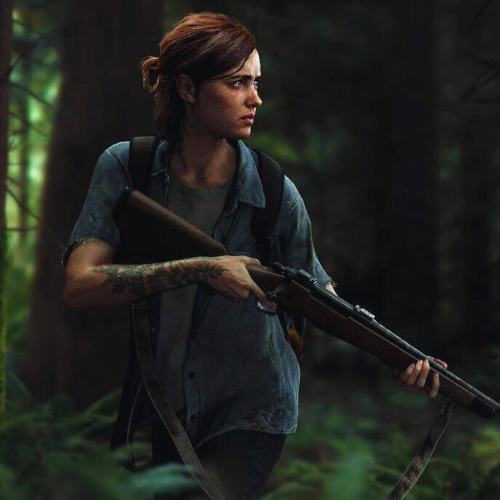
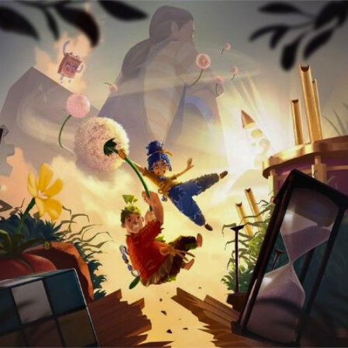
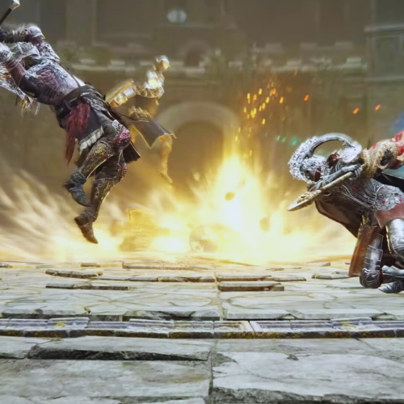
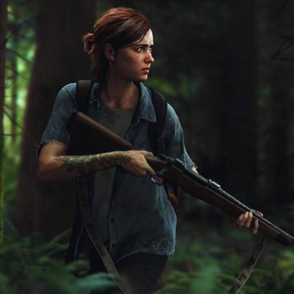
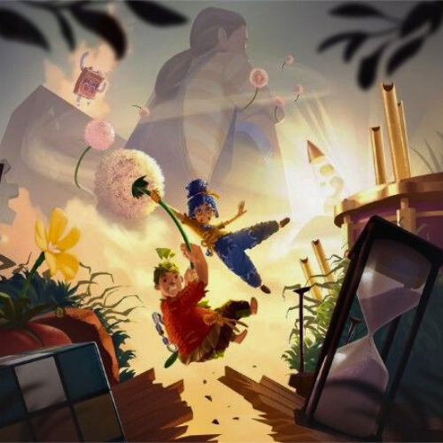
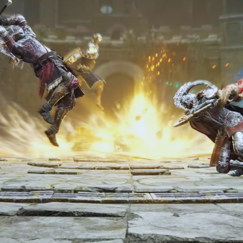

Valorant
Valorant é um jogo de tiro tático em primeira pessoa (FPS) gratuito, desenvolvido e publicado pela Riot Games. Lançado oficialmente em 2020, o jogo combina mecânicas precisas de tiroteio no estilo Counter-Strike com habilidades únicas de personagens inspiradas em jogos como Overwatch
Read Dead Redemption 2
Red Dead Redemption 2 é um jogo de ação e aventura em mundo aberto, desenvolvido pela Rockstar Games. Lançado em 2018, o título é um marco na indústria dos games, conhecido por sua narrativa cinematográfica, riqueza de detalhes e imersão incomparável.
Assassin’s Creed Shadows
Assassin’s Creed Shadows é o novo jogo da franquia ambientado no Japão feudal, no final do século XVI. Você joga com dois personagens: uma ninja chamada Naoe e um samurai africano chamado Yasuke. O jogo mistura furtividade, ação e exploração em um mundo aberto detalhado, com climas e estações do ano. Lançamento: março de 2025.
HADES
Hades é um jogo de ação roguelike desenvolvido pela Supergiant Games. Você controla Zagreus, filho de Hades, tentando escapar do submundo. Com combates rápidos, narrativa envolvente e progressão constante, o jogo se destaca pelo estilo artístico e pelas vozes dos deuses da mitologia grega.
Sifu
Sifu é um jogo de ação e combate corpo a corpo desenvolvido pela Sloclap. Você joga como um jovem artista marcial em busca de vingança, enfrentando inimigos em lutas intensas. Cada vez que morre, o personagem envelhece, ganhando experiência, mas perdendo vitalidade.
Fallout 4
Fallout 4 se passa em um mundo pós-apocalíptico devastado por uma guerra nuclear. Você assume o papel do único sobrevivente de um abrigo nuclear (Vault 111) em busca de seu filho desaparecido. O jogo combina narrativa profunda, personalização de personagem, construção de assentamentos e combate com armas e armaduras altamente modificáveis.
Hotline Miami
Um jogo ultra-violento com estética dos anos 80, trilha sonora marcante e ritmo acelerado. Você joga como um assassino mascarado que recebe ligações misteriosas ordenando massacres contra criminosos. O jogo exige precisão, reflexo rápido e estratégia — qualquer erro pode ser fatal.
Lies Of Pi
Lies of P é um RPG de ação inspirado nos jogos da série Souls, com ambientação sombria e temática baseada na história do Pinóquio. O jogador controla um autômato em uma cidade decadente, enfrentando inimigos implacáveis e explorando um mundo cheio de segredos. O jogo aposta em combates desafiadores, customização de armas e uma narrativa misteriosa.
Mortal Kombat 1
Mortal Kombat 1 é o reboot da popular franquia de luta. Mantém os famosos combates violentos, fatalities icônicos e uma história reimaginada que explora novos e antigos personagens. Com gráficos de última geração, jogabilidade refinada e modos multiplayer competitivos, é um dos títulos mais importantes do gênero fighting.
Spider Man
Em Spider-Man, você controla o icônico herói aracnídeo em uma versão detalhada e vibrante de Nova York. O jogo combina combates dinâmicos, exploração vertical pelas teias, missões variadas e uma história envolvente que traz tanto ação quanto emoção.
Hollow Night
Hollow Knight é um jogo indie de ação e exploração ambientado em um vasto mundo subterrâneo cheio de segredos, inimigos desafiadores e belos cenários desenhados à mão. O jogo é conhecido por sua atmosfera melancólica, gameplay preciso e narrativa profunda contada de forma sutil.
Blasphemous
Blasphemous é um jogo de ação e plataforma sombrio com forte inspiração na cultura e arte religiosa espanhola. Ambientado em um mundo gótico e brutal chamado Cvstodia, o jogador controla o “Penitente”, um guerreiro marcado por uma maldição, em sua jornada para quebrar um ciclo de sofrimento e redenção. O jogo é conhecido por sua dificuldade desafiadora
Darkest Dungeon
Darkest Dungeon é um RPG tático que desafia o jogador a liderar um grupo de heróis por masmorras cheias de horrores. Além dos combates, o jogo foca em aspectos psicológicos como estresse e medo dos personagens, tornando cada decisão crítica para a sobrevivência da equipe.
 




